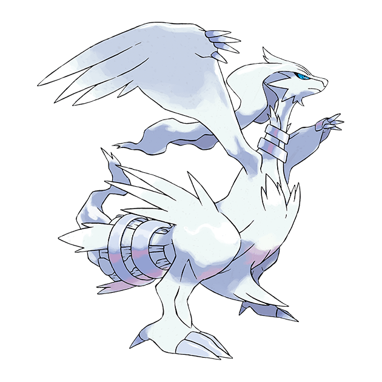

Reshiram เป็นโปเกม่อนในตำนานที่เป็นตัวแทนของความจริงและความปรารถนาดี มันมีพลังในการควบคุมไฟ และมักจะปรากฏตัวต่อผู้ที่มุ่งมั่นสร้างโลกที่เต็มไปด้วยความจริงใจและความถูกต้อง Reshiram มีบทบาทสำคัญในภูมิภาค Unova และเป็นคู่ต่อสู้ที่เท่าเทียมกับ Zekrom
Reshiram มีรูปร่างคล้ายมังกรสีขาวที่งดงามและสง่างาม ด้วยพลังในการปล่อยไฟที่สามารถเผาผลาญทุกสิ่งที่ขวางหน้าได้ Reshiram ยังเป็นที่รู้จักในฐานะผู้ปกป้องความจริงและความถูกต้อง หากใครที่มุ่งมั่นจะสร้างโลกที่ดีขึ้นด้วยความจริงใจ Reshiram จะตอบรับและช่วยเหลือพวกเขาด้วยพลังอันยิ่งใหญ่ของมัน
